Emotional decisions
Fear and excitement make it hard to follow your own plan. Even good strategies suffer when you are tired or reacting too fast.
Every trade is sized, capped, and stopped before it's placed. Start in paper mode, see why each trade happens, and go live only when Novastrum meets your standard.
Trade forex and crypto automatically with clear rules and no surprises. Every position is sized, capped, and stopped before it is placed. Start in paper mode and go live only when Novastrum meets your standard.

Paper trading availableTHE PROBLEM
Fear and excitement make it hard to follow your own plan. Even good strategies suffer when you are tired or reacting too fast.
Many automated tools do not explain why they trade. When something goes wrong, it is hard to know what happened or what to trust.
Crypto never closes, so a bot that isn't actively guarded can lose ground while you sleep.
Most automation tries to replace judgment with complexity. Novastrum is designed to scale your judgment, not bypass it.
HOW IT WORKS
Pick your market — forex or crypto — and start in paper mode with real prices and no money at risk. Switch to live trading only after you feel confident in the results.
Paper performance does not guarantee live performance
Email verification happens at signup. Identity verification is a separate step, required only for live trading.
Choose the limits you want to follow. Novastrum keeps those rules in place so you do not have to second-guess yourself during fast markets.
Novastrum will not exceed these, in paper or live mode.
Every trade comes with a simple explanation. You can see what happened, why it happened, and whether the bot stayed inside your limits.
Sent by push or SMS. You choose which.
FUNDING
Novastrum trades inside your account. Funding and withdrawing stay entirely yours to control.
Bring fiat or crypto in through your broker or exchange's own on-ramp — bank transfer, card, or a direct deposit. Novastrum never touches this step; it only starts trading once your account is funded.
Withdrawals happen on your broker or exchange, on your schedule. Novastrum's API access is trade-only — it can never move funds out on its own.
TRANSPARENCY
WHY THE BOT ENTERED
Price closed above the 20-period average with rising volume. Novastrum opened a position sized to your 2% limit and placed the stop 1.5% below entry, as configured.
CURRENT RISK EXPOSURE
4.2% of balance in open trades
2 open positions
DAILY DRAWDOWN
-2.1%
Today, against your 5% limit
Bot stops automatically at 5%.
EMERGENCY STOP
Halt all activity instantly.
Closes nothing automatically. You decide what happens next.
WHY IT EXITED OR PAUSED
Stop limit reached at 66,207. Trend reversed 14 minutes after entry.
Take-profit target hit at 1.0871. Closed as configured.
FULL TRADE HISTORY
| Instrument | Entry | Exit | Result |
|---|---|---|---|
| BTC/USDT | 67,215 | 66,207 | -1.4% |
| EUR/USD | 1.0842 | 1.0871 | +0.9% |
| AAPL | 228.40 | 231.15 | +1.2% |
| ETH/USDT | 3,180 | 3,124 | -1.1% |
Every trade, exportable.
Risk disclosure: Trading carries real risk, including losing money. Risk limits and paper trading reduce that risk but do not remove it. Review your settings carefully before trading with real funds.
WHO IT IS NOT FOR
No automated system can promise a profit, and any platform that does is telling you something untrue. Novastrum shows you what it did and why. It does not forecast what it will earn.
Copy trading means trusting a stranger's judgment without seeing it. Novastrum runs rules you can read and change. If you do not want to understand the strategy, this is the wrong tool.
Automation makes an existing approach consistent. It does not supply one. Learn to trade first, then decide whether automating it is worth doing.
If none of those describe you, start in paper mode and judge it on what it actually does.
Join the waitlist for early access and a say in how Novastrum works.
FAQ
Novastrum helps you run trading ideas automatically while keeping your limits, your visibility, and your control in place. You can start in paper mode, review every trade in plain language, and move to live trading only when you are ready.
Paper trading runs your strategy on real market prices with no money at risk. Live trading places real orders through your connected broker or exchange, under the same limits you set in paper mode.
No. You only need an email address to join. A broker or exchange connection is required later, and only if you choose to trade live.
No. Novastrum's API access is trade-only. Funding and withdrawals happen on your broker or exchange, on your schedule, and Novastrum can never move funds out on its own.
No. No automated system can promise a profit. Novastrum shows you what it did and why, and keeps every trade inside the limits you set.
You set three limits: how much of your balance goes into each trade, how much you can lose in a day before the bot stops, and how far a stop sits from your entry. Novastrum will not exceed them. Your daily loss limit can be set anywhere up to 10%, which is a hard ceiling nobody can raise.
Crypto through Binance and OKX, forex through MetaTrader 5, and stocks through Alpaca. All three from launch.
Early access is opening soon. The waitlist is evaluated on a rolling basis, and members will be notified by email as spots open.
Live trading requires two things: a verified email, which you complete at signup, and a separate identity check. Paper trading needs neither. You can test Novastrum fully before verifying anything.
You'll get product updates and research invitations, and early access to paper trading when your spot opens. Priority is given to active traders looking for automation.
Novastrum applies the same risk framework to both markets — position sizing, stop placement, and daily drawdown limits work identically. The difference is execution: forex strategies run during session hours with tighter spreads and lower volatility assumptions, while crypto strategies account for 24/7 trading, wider spreads, and higher volatility. Each market has its own strategy configuration so your limits stay appropriate to the asset class.